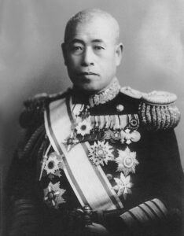

Yamamoto Isoroku
Yamamoto Isoroku 4 Nisan 1884’de Nagaoka (Japonya)’da doğmuştur. Kendisi Japon İmparatorluk Donanması (IJN)‘nın en meşhur amirallerinden biridir. Ama kendisini tarihe geçiren olay, Pearl Harbor‘daki ABD deniz üssüne sürpriz bir saldırı saldırıyı tasarlayıp uygulaması olmuştur. Bu olay hem İkinci Dünya Savaşı’nın gidişatını etkilemiş hem de donanma savaş anlayışının değişmesine sebep olmuştur.

Yamamoto 1904 yılında Japon Deniz Harp Okulu’ndan mezun oldu ve bir yıl sonra Rus-Japon Savaşı sırasında Tsushima Muharebesi‘nde yaralandı. 1913 yılında Japon Deniz Kurmay Koleji’ne kaydoldu ve 1916 yılında mezun olduktan sonra Yamamoto ailesine evlatlık verildi ve adını değiştirdi. Misafir öğrenci olarak Harvard Üniversitesi’nde İngilizce eğitimi aldı (1919-21). Daha sonra Japon Deniz Kurmay Koleji’nde (1921-23) öğretmenlik yaptı ve 1924 yılında uçuş eğitimi için Kasumigaura’ya (Ibaraki vilayetinde) gönderildi. Yüzbaşılığa terfi eden Yamamoto, önce bir amiralin yardımcısı, ardından da Washington’da deniz ataşesi olarak (1926-28) Amerika Birleşik Devletleri’nde bir başka göreve atanmıştır. Yamamoto, Amerika Birleşik Devletleri’nde geçirdiği süre zarfında, daha sonraki savaş hizmetlerini etkileyen alışkanlıklar ve düşünce kalıpları edindi. Amansız bir poker oyuncusu olmanın yanı sıra, Amerikan donanmasını golfçüler ve briççiler için bir kulüp olarak görerek Amerikan deniz subayları hakkında ilginç gözlemlerde bulundu. Öte yandan ABD’nin endüstriyel kapasitesini anlamaya çalıştı.
ABD’deki görevi sonrasında Japonya’ya dönen Yamamoto, kendisini Japonya’nın en önde gelen havacılık subaylarından biri haline getiren 10 yıllık bir döneme başladı. 1928’de Japon uçak gemisi Akagi’ye komuta etti. 1929’da tümamiralliğe terfi eden Yamamoto, Deniz Hava Kuvvetleri Teknoloji Bölümü’nün şefi olarak görev yaptı ve burada ünlü Zero avcı uçaklarının üretildiği bir program olan hızlı uçak gemisi kaynaklı avcı uçaklarının geliştirilmesini savundu. Yamamoto 1934’te Birinci Taşıyıcı Tümeni’ne komuta etti. 1935’te Japonya’nın dünya güçleri arasında temsil edildiği Londra Deniz Konferansı’nda Japon delegasyonuna başkanlık etti. 1936’da bir koramiral olarak donanma bakan yardımcısı oldu. 1938’de Birinci Filo’ya komuta etti ve 1939’da Birleşik Filo’nun başkomutanı oldu. Yamamoto artan kıdemini kullanarak donanmayı modası geçmiş olarak gördüğü savaş gemilerinden uzaklaştırıp uçak gemilerine dayalı taktiklere -daha sonra Pearl Harbor’a saldırı planına dahil edeceği uçak gemisi taktiklerine- yöneltti.
Japon filosundaki en kıdemli deniz amirali olan Yamamoto, Amerika Birleşik Devletleri’ne karşı savaşa hazırlandı. Genel kanının aksine Yamamoto, Japonya’nın Güneydoğu Asya’nın zengin topraklarını işgal etme kararını vermesinin ardından Amerika Birleşik Devletleri ile savaşa girilmesini savunurken; donanma bakanlığındaki diğerleri ise Asya’daki Hollanda ve İngiliz mülkleriyle savaşırken bile Amerika ile savaştan kaçınmayı umuyordu. Japon İmparatoru Hirohito, Yamamoto’nun görüşünü benimsediğinde, amiral enerjisini ABD Pasifik Filosu ile yaklaşan savaşa odakladı. ABD’nin muazzam endüstriyel kapasitesinin farkında olan, ancak Amerikan halkının potansiyel kararlılığını yanlış anlayan Yamamoto, Japonya’nın zafer için tek şansının Pasifik’teki Amerikan deniz kuvvetlerini felce uğratacak ve ABD’yi müzakere edilmiş bir barışa zorlayacak, böylece Japonya’nın Doğu Asya’da serbestçe hüküm sürmesine izin verecek sürpriz bir saldırıda yattığını iddia etti. Yamamoto, Amerika Birleşik Devletleri ile yapılacak uzun bir savaşın Japonya için felaket anlamına geleceğine inanıyordu. Pearl Harbor‘a saldırmak için hazırlanan ayrıntılı planın yazarı olmasa da, hükümet çevrelerinde bu planı savunduğu kesindi. 7 Aralık 1941’de, Koramiral Nagumo Chūichi’nin komutasındaki uçak gemileri Pearl Harbor’da demirlemiş olan ABD Pasifik Filosuna karşı çarpıcı bir taktik zafer kazandı. Bu saldırıyı altı ay boyunca kesintisiz bir deniz zaferleri dizisi izledi ve Yamamoto’nun prestiji 1942 ilkbaharının sonlarında yeni zirvelere ulaştı.
Yine de Pearl Harbor saldırısının büyük taktik başarısı stratejik bir felaketi gizledi. Saldırı, ABD’yi barış istemeye teşvik etmek şöyle dursun, Amerikan halkını galeyana getirdi; ABD ile uzun bir çatışmayı önlemek için tasarlanan sürpriz bombardıman, bunun yerine uzun süreli ve topyekûn bir savaşı garantilemeye yardımcı oldu. Yamamoto, Pearl Harbor’da yakalanmayan ABD gemilerini, özellikle de ABD Donanması’nın uçak gemilerini yok etmeyi umduğu Midway Muharebesi‘nde (4-6 Haziran 1942) daha da tökezledi. Ancak Midway’deki saldırı, kısmen ABD’nin Japon kuvvetleri hakkında mükemmel istihbarat bilgisine sahip olması, kısmen de Yamamoto’nun planlarının çok karmaşık ve hedeflerinin karışık olması nedeniyle başarısız oldu. Japon savaş planı sekiz ayrı görev kuvvetinin hareketini, Aleutian Adaları’nda bir şaşırtma saldırısını ve Midway Adaları’nın işgalini içeriyordu. Tüm bunlar Amerikan uçak gemilerini imha etmeye odaklı planlardı. Yamamoto’nun Güney Pasifik’teki Guadalcanal ve Solomon Adaları’na yönelik harekâtları da pek iyi geçmedi; zira buradaki Müttefik kuvvetleri Japonya’nın altından kalkamayacağı türden bir yıpratma savaşı yürütürken, Yamamoto, kuvvetlerini parça parça hareket ettirmekten başka bir şey yapmayı reddetti.
Yine de Amerika’nın Yamamoto hakkındaki değerlendirmesi o kadar güçlüydü ki, istihbarat bilgileri Nisan 1943’te Japon amiralin uçuş planını ortaya çıkardığında, Pasifik’teki ABD’li komutanlar uçağını pusuya düşürmeyi ve vurmayı üstlendi. 18 Nisan 1943’te Güney Pasifik’teki Japon üslerini teftiş gezisi sırasında Yamamoto’nun uçağı Bougainville Adası yakınlarında düşürüldü ve amiral hayatını kaybetti.
Yamamoto, İkinci Dünya Savaşı sırasında Japonya’nın en önde gelen deniz subayıydı. Pearl Harbor’dan önceki yıllarda denizdeki göreceli deneyimsizliğine rağmen, deniz stratejisine katkısı, uzun menzilli deniz saldırılarında taşıyıcı tabanlı uçakların etkinliğini erken fark etmesinde yatmaktadır. Stratejistten çok bir taktisyen olmasına rağmen, alışılmadık derecede yetenekli ve becerikli bir subay ve bazen çelişkili karaktere sahip karmaşık biriydi.